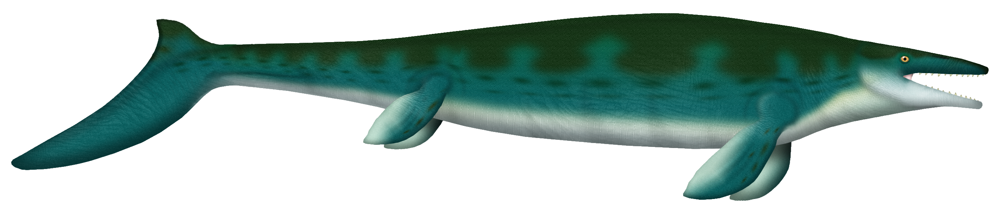
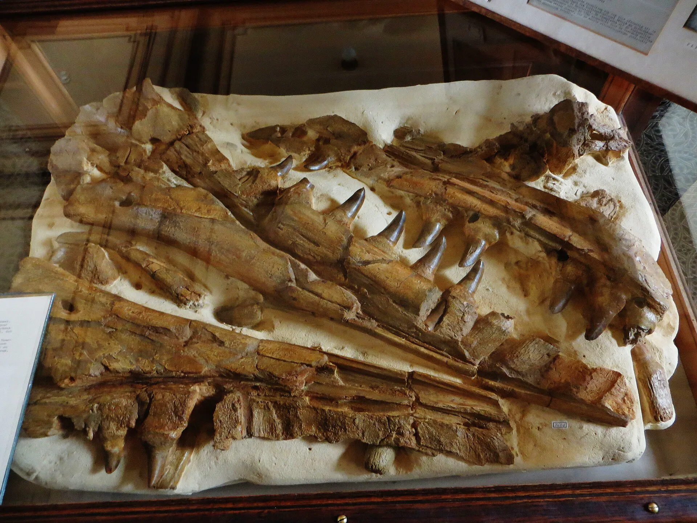

A skull in Haarlem
Mosasaurus
A drawing of the whole animal, and the skull at the Teylers Museum. No length copied from an artist’s note.
Drawing: UnexpectedDinoLesson, CC BY 4.0, via Wikimedia Commons. Artist’s concept, not a photograph. Drawing file page

TODO machine-draft translation: English for review.
There is no film of this animal made for this site. The picture behind the title is a drawing. The photograph lower down is a skull at the Teylers Museum in Haarlem.
What we know
- Mosasaurus hoffmannii lived in the Campanian and Maastrichtian. On the Paleobiology Database timescale used here, the oldest bin starts at 83.6 million years ago, and most records are Late Maastrichtian. The Maastrichtian ends at the close of the Cretaceous, about 66 million years ago. The animal did not live after that. The same list stores a younger bin edge at 61.66 million years. That edge is later than the end of the Cretaceous. It is a bin boundary, not a last day of life, and this site does not use it as the animal’s age. Paleobiology Database occurrence list
- The photograph is a fossil mosasaur taken at the Teylers Museum in Haarlem. The file is titled as the first specimen. The original file is 4000 pixels wide. This page serves 1920 pixels wide, not enlarged. Skull file page
- The drawing behind the title is an artist’s concept of the whole animal. It is not a photograph. The original file is 2800 pixels wide. This page serves 2800 pixels wide, not enlarged. Drawing file page

What this page does not claim
- The artist’s file note says a full body is hard to estimate from the skull. This page does not copy a length from that note, and it does not draw a person beside the animal.
- The pin is the city of Maastricht. The skull photograph was taken in Haarlem, not at this pin. The place marker was made for this site. Created by the Founder and SI. Maastricht on OpenStreetMap

Sources (4)
- Paleobiology Database occurrences of Mosasaurus hoffmannii
- Wikimedia Commons — the Haarlem skull photograph, CC BY-SA 4.0
- Wikimedia Commons — the life drawing, CC BY 4.0
- OpenStreetMap — the city of Maastricht